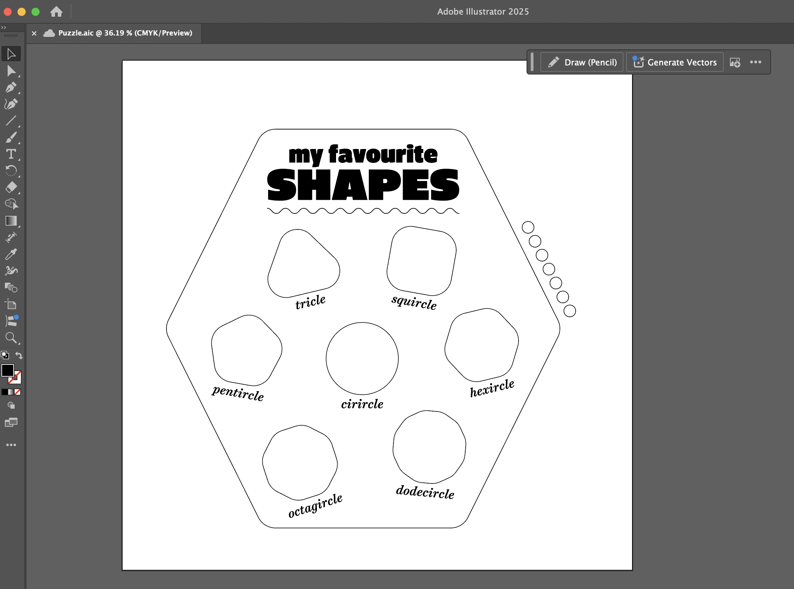
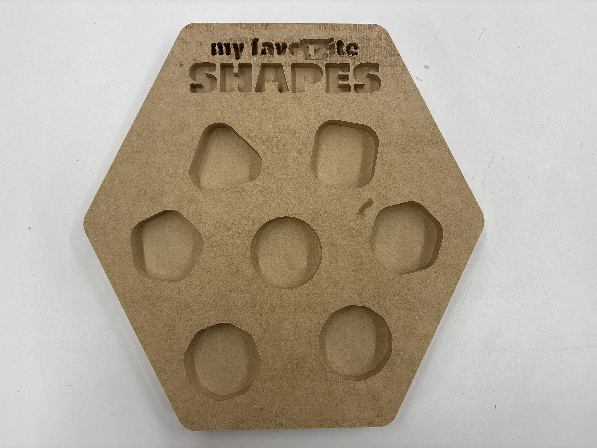
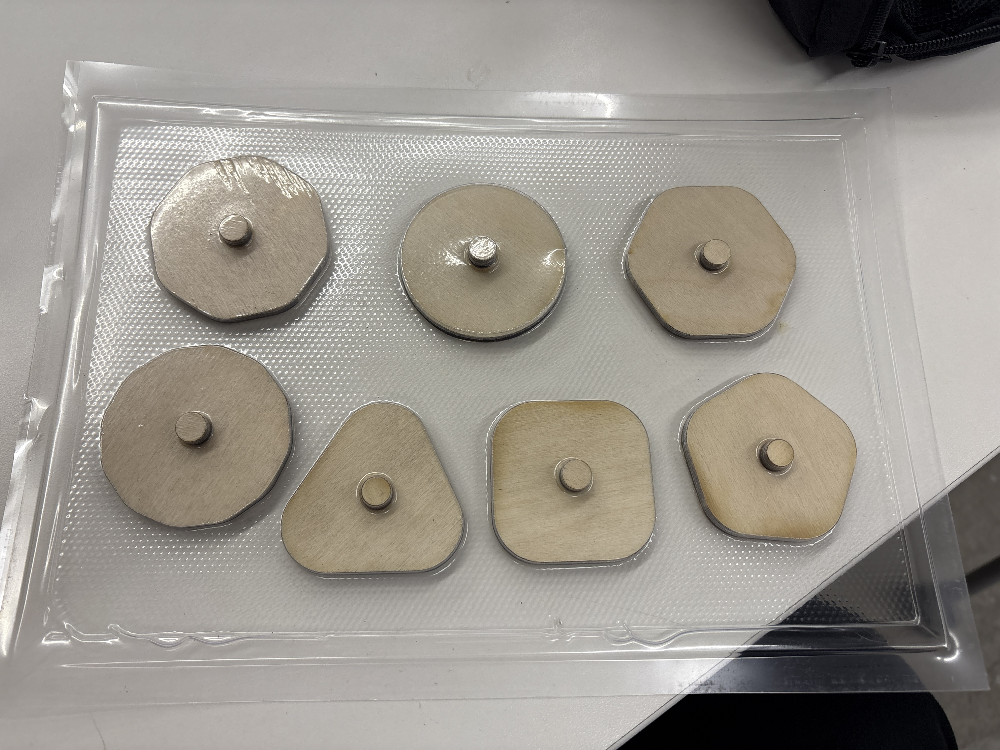
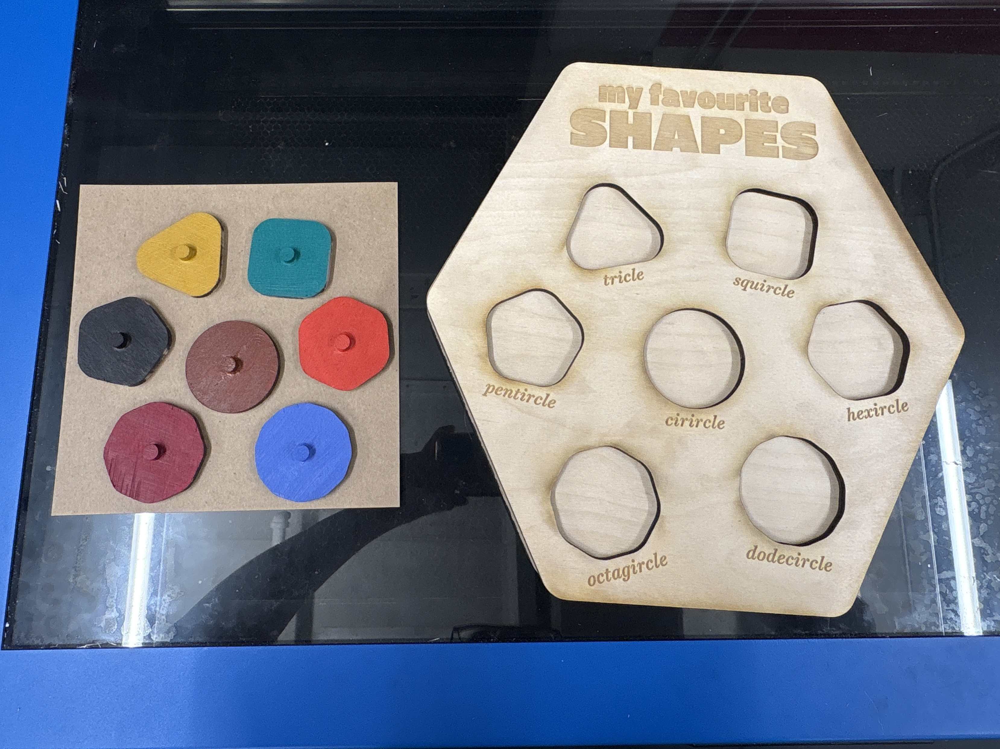

<div class="textcontainer">
<p class="margin"> </p>
<h1>🤖 Week 8: CNC 🤖</h1>
<br></br>
<h2 class="p1">Part I: CNC Something!</h2>
<br></br>
<p class="p1">My goal this week was to create a simple Montessori-style puzzle for kids to learn shapes&mdash;but with a playful twist inspired by the fact that the ShopBot doesn&rsquo;t make perfectly straight cuts.</p>
<img src="puzzle example.jpg" alt="inspo" class="center">
<p style="text-align: center;"><em>Design for this week's project in Illustrator</em></p>
<p class="p1">I designed the pattern in Illustrator, planning to cut the outline on the ShopBot, use deep pocket cuts for the puzzle-piece slots, and shallow pockets for engraved text.</p>
<p></p>
<p style="text-align: center;"><em>Design for this week's project in Illustrator</em></p>
<p class="p1">Getting set up on the ShopBot turned out to be trickier than expected, and Alyssa helped me troubleshoot several issues. First, we spent quite a while figuring out how to load more polymer nails into the nail gun. Once we finally got that right, we realized the nails didn&rsquo;t go all the way through the wood. To fix this, we polymer-nailed a scrap piece underneath, then drilled into that to secure the stock for cutting.</p>
<p class="p2">I also realized partway through that this CNC setup might not work for the final puzzle body, as the bit was too large for the fine engraving I wanted. Still, I decided to proceed and use the CNCed piece to cast silicone puzzle pieces instead&mdash;squishy and even more fun! After about an hour, the piece came off the CNC. As expected, the font didn&rsquo;t cut well, but the shapes looked great. </p>
<p></p>
<p style="text-align: center;"><em>Piece CNCed out of MDF</em></p>
<br></br>
<h2 class="p1">Part II: Post-Process Your Design!</h2>
<br></br>
<p class="p1">I went to vacuum-form this piece using the large former, but Bobby let me know we don&rsquo;t stock plastic sheets that big. As a workaround, I laser-cut a smaller puzzle base out of plywood and used the scraps as molds to vacuum-form on the smaller machine.</p>
<p></p>
<p style="text-align: center;"><em>Vacuum formed mold, shrinkwrapped around laser cut wood</em></p>
<p class="p1">Once I had the vacuum-formed plastic, I mixed and poured silicone into the molds to cast the squishy puzzle pieces. I also glued the two halves of the laser-cut puzzle base together and painted the wooden puzzle pieces as an alternate set.</p>
<p class="p1">[TBD OF FINISHED SILICONE PIECES]</p>
<p></p>
<p style="text-align: center;"><em>Final puzzle base and painted wood pieces</em></p>
<p class="p1">Overall, I&rsquo;m really happy with how it turned out&mdash;a cute puzzle base with fun lettering and two interchangeable sets of pieces: one colorful in wood, and another soft, monochrome set in squishy silicone.</p>
<p class="p1">[TBD OF EVERYTHING]</p>
</div>